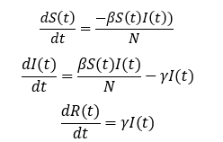
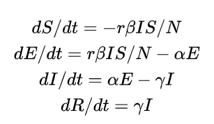
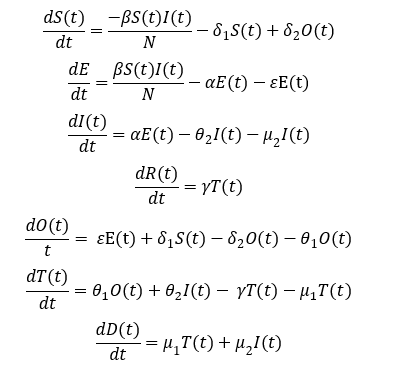
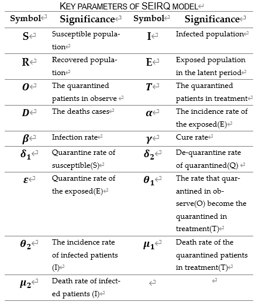

Infection rate:3.450640（β)
The incidence rate of the exposed(E):0.069183(α)
Cure rate:0.012597(γ)
The epidemic data of infectious disease model is connected to Akshare whhich provides the latest epidemic data from January 20 to May 1 through API interface, including the number of confirmed cases, suspected cases, deaths, etc. We process the data through python scripts to adapt to the prediction model. For 14840 newly confirmed cases in Hubei Province on February 12, we apportioned the number of newly increased cases in proportion to the number of newly confirmed cases from February 7 to February 12 in the calculation process.
Generally, people within the epidemic scope of infectious diseases are divided into the following categories:
1. S, susceptible, refers to those who do not have the disease, but lack of immunity, and are easy to be infected after contact with the infected person;
2. E, exposed, refers to people who have been exposed to infection but are unable to infect others temporarily, which is applicable to infectious diseases with long incubation period;
3. I, infectious, refers to the infected person, who can be transmitted to class s members to become class E or class I members;
4. R, recovered, refers to the person who is isolated or has immunity due to illness. If the immune period is limited, class R members can be changed into class s again.
The differential equation of SIR model is as follows:
The differential equation of SEIR model is as follows:
The differential equations of seirq model we designed are as follows:
The parameters in the infectious disease model are explained as follows:
